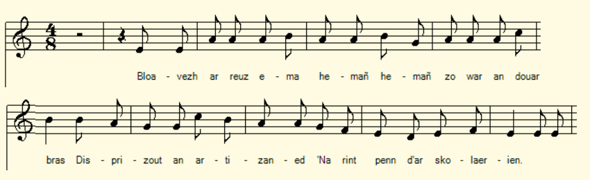

A-enep ar c'hloer
Contre les clercs
Against the clerics
Chant noté par Théodore Hersart de La Villemarqué
dans le 3ème Carnet de Keransquer (p. 29) .

Didostait ta
Mélodie de "Didostait 'ta" (Mode Dorien)
|
A propos de la mélodie: Inconnue. La mélodie "Didostait 'ta gwazed yaouank" a été choisie comme illustration. A propos du texte Le carnet N°3 ne donne aucune indication sur ce chant que La Villemarqué semble être le seul à avoir noté (vers 1843). |
About the tune Unknown. The tune "Didoste 'ta gwazed yaouank" was chosen as an illustration. About the lyrics Notebook N ° 3 gives no indication about this song that La Villemarqué seems to be the only one to have noted (around 1843). |
|
BREZHONEK p. 29 1. Bloavezh ar reuz ema hemañ, Hemañ zo war an douar bras: Disprizout an artisaned Na rint penn dar skolaerien. [1] 2. Be(z)añ zo merched en Treger, O-deus laret kreñv atav E larfe dan artisaned Skolaerien-se o-devo ! 3. Pa oan-me ur skolaer yaouank O tiskourouz e dous koant A diougane de(zh)i he charo, He charo, en delchamant ; 4. E dorn gantañ war benn he glin, O tiskouriñ diraki - Goude filoutet he chalon Goap a raio anezhi. - 5. Na me na gomzan ket amañ Dimeus an holl skolaerien. Me a gomz, e zivaskadezh, Dimeus paotred ar visterien O choari ma-ne-gousto. KLT gant Christian Souchon |
TRADUCTION FRANCAISE p. 29 1. Année de malheur s'il en fut Sur la grande planète. Honte aux artisans qui n'ont su, O clercs, vous tenir tête! 2. A leurs artisans de maris, Dans le Trégor, des femmes Affirment vouloir dans leurs lits Accueillir ces infâmes . 3. Lorsque jétais jeune étudiant Flirtant avec ma belle, On m'entendait prophétisant Que je n'aimerais qu'elle. 4. La main posée sur son genou, Débitant des sornettes, Prenant, quand j'en venais à bout, La poudre d'escampette... 5. Je ne vous parle pas ici De tous les clercs, ma chère, Mais surtout de ces malappris, Ces acteurs de mystères, Qui jouent à n'importe quel prix. Traduction Ch. Souchon (c) 2020 |
ENGLISH TRANSLATION p. 29 1. A year of woe, if there was one On this earth of ours ever! Shame on all those craftsmen who shun Withstanding the clerks' power! 2. In Tregor, there are women who Say to their husbands: "Craftsmen Some day we will, to replace you, Sleep with one of these villains." . 3. When a young student, I did purr And meow with my fair mistress. I used to prophesy to her That my love would be endless; 4. While my hand rested on her knee, I was telling her nonsense. When the way to her heart was free Off I went, meant no offence! 5. I am not talking to you here Of the clerks in the stories But especially of these mere, False actors of mysteries, Who must needs play these comedies. Traduction C. Souchon (c) 2020 |
NOTES
|
[1] Les poésies bretonnes surprennent souvent par leur laconisme. Les phrases se suivent dans un enchaînement logique dont tous les maillons ne sont pas toujours égrenés. Dans le cas présent, en supposant que c'est un "clerc" qui parle dès la strophe 1:
Si cette interprétation est exacte, la poésie bretonne aurait traité, avant René Clair, le sujet du film: "Les Grandes manoeuvres" (1955), à savoir les "amours sans importance". Le clerc de la gwerz est devenu un jeune lieutenant de cavalerie (Gérard Philipe) et la femme de l'artisan une modiste (Michèle Morgan). Mais il n'y a rien à changer aux paroles de la chanson du film, composées par René Clair lui-même, : "On dit "toujours"/ On dit "jamais"/ On dit "Je veux" ou "je promets".../ La belle avance! Tous ces beaux serments/ Vois-tu, ça n'a pas cours Dans le jeu des amours / Sans importance..." [2] "Mystères": Ce mot désignait des scènes de l'Ancien et du Nouveau Testament que l'on jouait sur les parvis des églises. Cette tradition va du 12ème au 15ème siècle (où elle laisse la place à la comédie). A Paris, ces mystères étaient joués par les "confrères de la Passion" qui étaient des bourgeois et des artisans. Il s'adjoignaient souvent d'autres confréries; notamment, celle des Enfants sans souci, qui représentaient sur la même scène des moralités, des soties ou des farces. |
[1] Breton poems often surprise by their laconism. The sentences follow one another in a logical sequence in which some links are sometimes skipped. In the song at hand, when assuming it is one and the same "clerk" speaking from stanza 1 to stanza 5:
If this interpretation is correct, Breton poetry would have addressed before René Clair, the subject of the film: "Les Grandes manoeuvres" (1955), namely "unimportant loves". The clerk in the gwerz became a young lieutenant in the cavalry (Gérard Philipe) and the craftsman's wife a milliner (Michèle Morgan). But there is nothing to change in the lyrics of the film's song, composed by René Clair himself,: "Always" I say "/ "Never" you say/ "I swear, 'I've got to ..." A fat lot / Of good that's done us! All these earnest oaths / You know, they are just loath- some in the game of love / That does not matter ... " [2] "Mysteries": This word refers to scenes from the Old and New Testaments that were performed in front of churches. This tradition went from the 12th to the 15th century (when it gave way to comedy). In Paris, these "mysteries" were played by the "Brotherhood of the Passion" consisting of bourgeois and craftsmen. They often hired other brotherhoods; in particular, that of the "Children-without-concern", who represented on the same stage funny plays known as "moralities", "soties" or "farces" (jokes). |